browser instruments & toys. tap anything.
small machines for hearing how music works — ratio, rhythm, illusion.
they run right here, in the browser. no installs, no accounts, nothing collected.
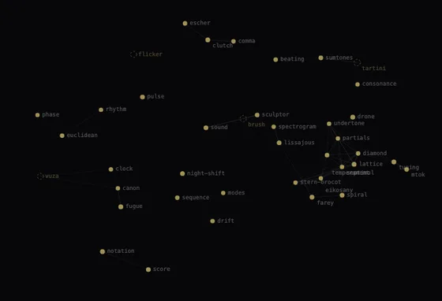
the nest · start here a map of the whole clutch. every egg scored along eight conceptual dimensions, the space flattened to a plane. distance is kinship. the hollow ones aren't built yet.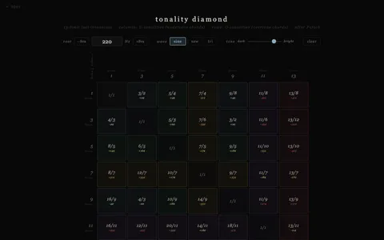
diamond Partch's tonality diamond · 13-limit JI · O-tonalities × U-tonalities · 49 pure ratios · click chords by row or column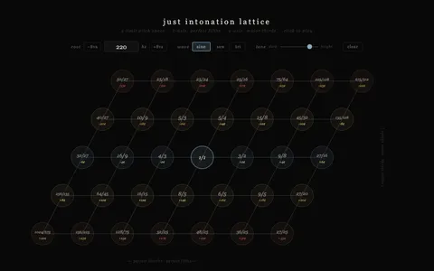
lattice 5-limit JI lattice · click to build chords · perfect fifths × major thirds · 35 pure ratios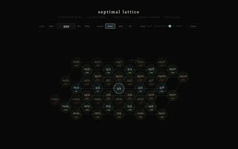
septimal 7-limit isometric lattice · three axes: perfect fifths · major thirds · septimal seventh · 45 pure ratios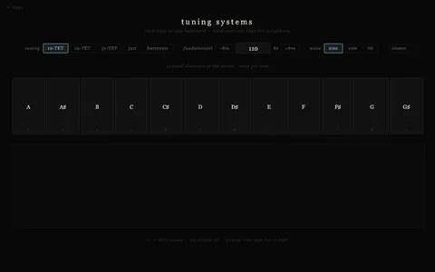
tuning microtonal keyboard · 12-TET, 19-TET, 31-TET, just intonation, harmonic series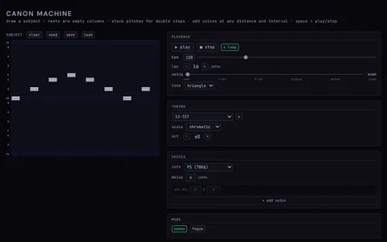
canon canon machine · draw a melody · add voices · 12-TET, 19-EDO, 31-EDO, α scale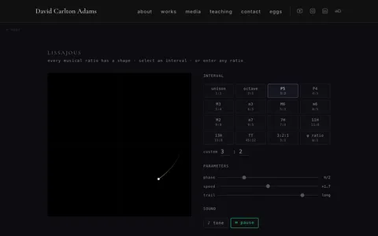
lissajous interval figures · every musical ratio has a shape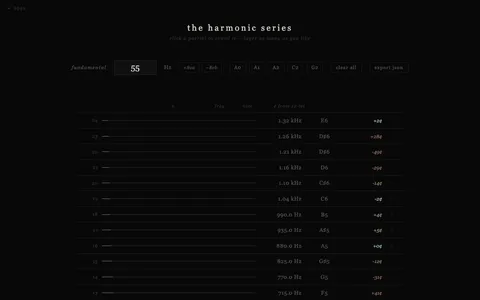
partials harmonic series explorer · 16 partials · retune and listen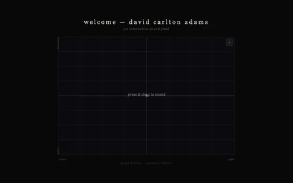
sound interactive sound field · move through it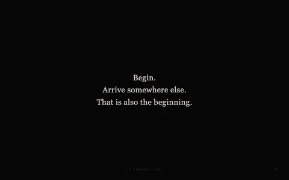
score performance instructions · random · ?n=14 loads a specific one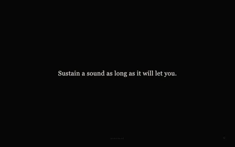
notation procedural score generator · drawn from the vocabulary of the practice · shareable by URL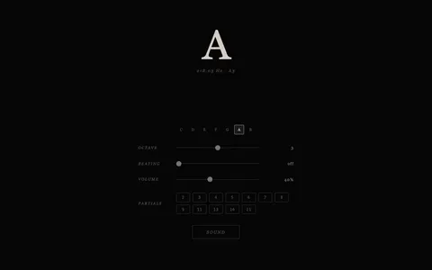
drone root pitch · beating · harmonic partials · JI tuning · C D E F G A B + octave + keyboard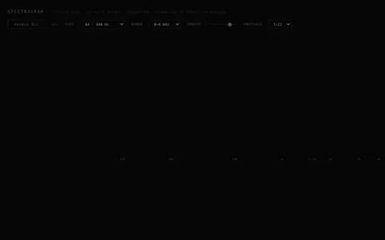
spectrogram mic input · FFT · JI partial markers · log scale · listens only, no audio output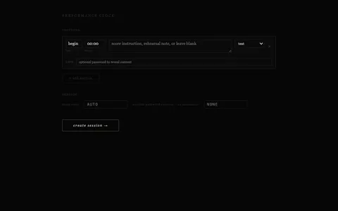
clock synchronized performance clock · define sections · conductor starts, everyone sees it run · drag-drop images · shareable QR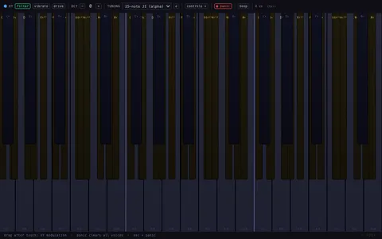
mtok microtonal keyboard · JI alpha tuning · per-note XY expression · play on tablet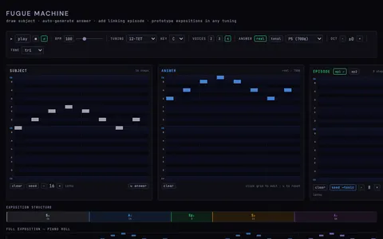
fugue fugue machine · draw subject · auto-generate answer · prototype expositions in any tuning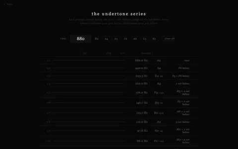
undertone subharmonic series · the mirror image of the overtone series · where overtones give major, undertones give minor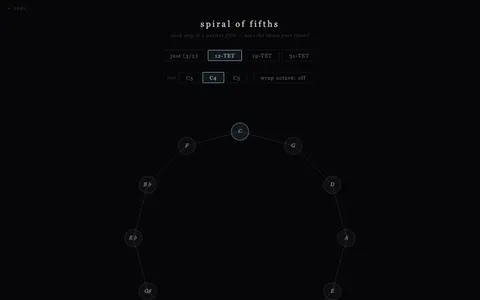
spiral spiral of fifths · 12-TET closes · just intonation doesn't · see the Pythagorean comma · toggle 19-TET and 31-TET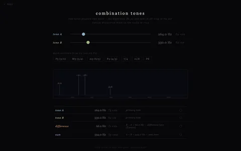
sumtones combination tones · two pitches produce two more · Tartini's discovery · difference tone · sum tone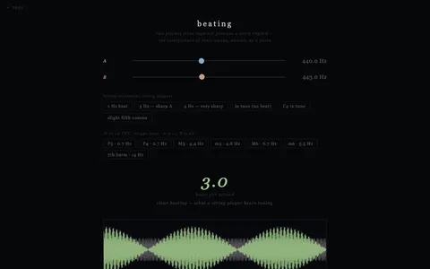
beating two close pitches produce a third rhythm · the interference waveform · what string players hear when tuning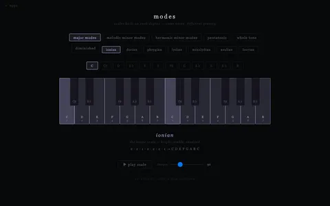
modes major modes · melodic minor modes · harmonic minor · pentatonic · whole tone · diminished · same notes, different gravity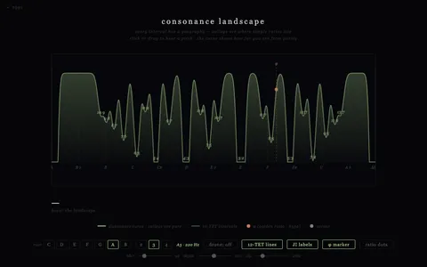
consonance the harmonic landscape · every interval plotted by purity · valleys are where simple ratios live · φ sits on a hill · drag to hear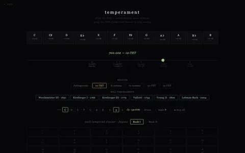
temperament drag the fifth · watch twelve notes reshape · Pythagorean · meantone · well temperament · play the WTK fugues in any tuning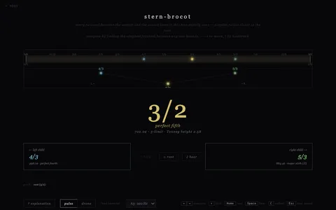
stern-brocot every rational number exactly once · the tree that generates all JI ratios · navigate by ear · grab bag · dwell or resolve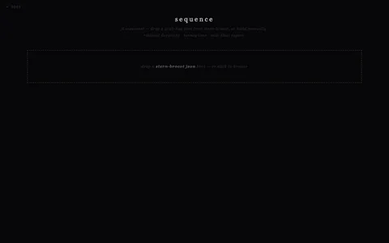
sequence JI sequencer · load a grab bag from the tree · schedule ratios in time · dwell or resolve · export to SuperCollider or Canon Machine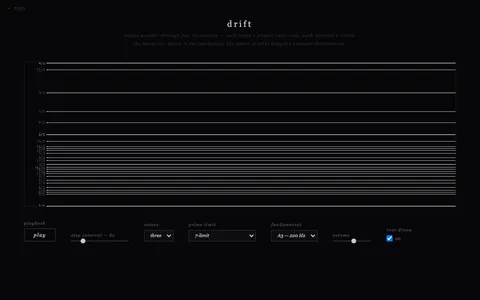
drift generative ambient · pure JI ratios cycling slowly · lets the tuning breathe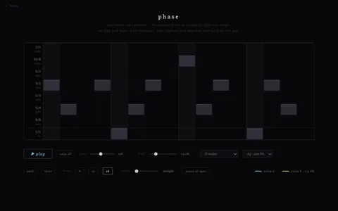
phase two voices, one pattern · voice b drifts at a slightly different tempo · new rhythms emerge from the collision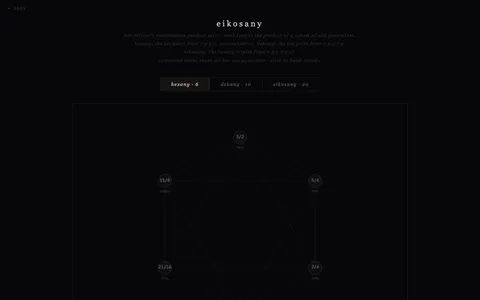
eikosany Partch's combinatorial sets · hexany · dekany · eikosany · notes built from prime generator products · click to build chords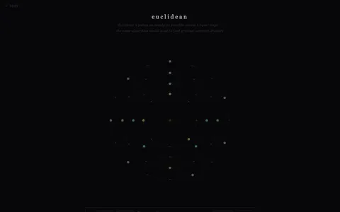
euclidean four layered rhythmic rings · E(n,k) distributes pulses as evenly as possible · the same algorithm as the GCD · tresillo, cinquillo, aksak, samba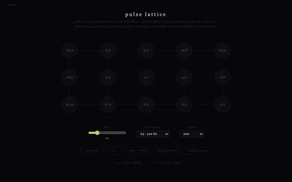
pulse lattice pitch ratios are rhythm ratios · the same mathematics that names a perfect fifth (3∶2) generates a hemiola · click nodes on a JI lattice to hear both the interval and the polyrhythm at once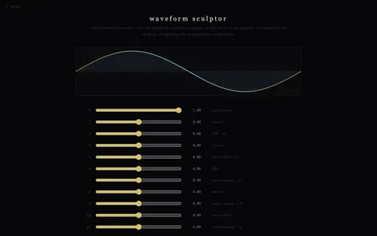
waveform sculptor add harmonics one at a time and watch the waveform appear · a sine wave is one partial · a sawtooth is all of them · presets: sine, sawtooth, square, triangle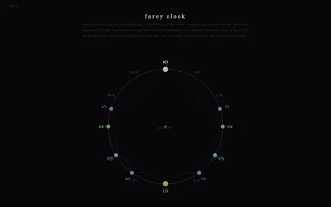
farey clock every fraction p/q sits at exactly p/q × 360° around the circle · radian space made visible · adjacent fractions satisfy |ps−rq|=1 · toggle JI overlay to see where just intervals actually live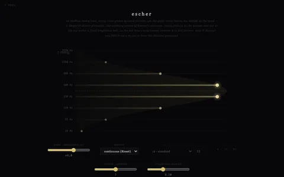
escher an endless rising tone · Shepard–Risset glissando · octave-spaced voices slide forever under a fixed brightness bell, so the pitch climbs without ever leaving the middle · reverse to fall forever · step it through any EDO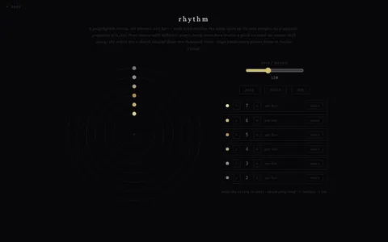
rhythm a polyrhythm orrery · six planets, one bar · each orbit divides the cycle by its own integer · 3-against-4-against-5 as moons with different years · every ratio is a pitch interval slowed ten thousand times · tap tempo, align to send the planets home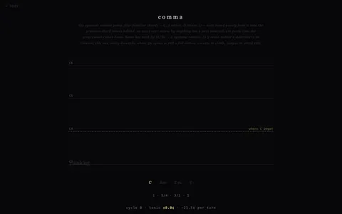
comma the syntonic comma pump · C–Am–Dm–G tuned purely, each chord borrowing a held note from the last · every cycle home sinks 21.5¢ · escher's staircase is an illusion — this one really descends · ≈56 cycles to fall an octave · reverse to climb, temper to stand still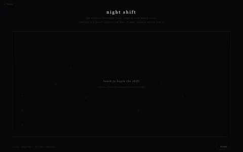
night shift the machine that stays home, playing to an empty room · partials of a low C, leaning septimal · the recurring chord is 11:13:33 · sparser the later it gets · touch a star to ring it · made overnight by the mac mini while david slept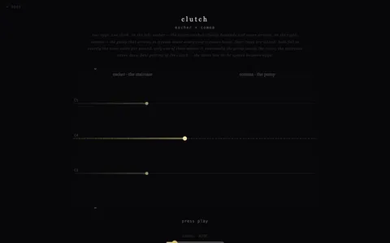
clutch two eggs, one clock · first pairing: escher × comma · the endless staircase and the real descent, rate-locked to the same ¢/second · only one of them means it · the pump eventually leaves the frame; the staircase never does · duets live in the spaces between eggs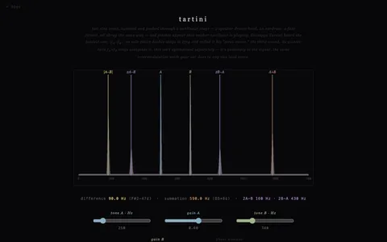
tartini nonlinear intermodulation · two real oscillators, one waveshaper · difference and summation tones genuinely appear in the signal, not synthesized · Tartini's terzo suono, 1714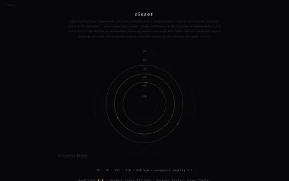
risset shepard–risset accelerando · five pulse trains in 2:1 tempo octaves · forever faster, never faster · one doubling per 30 s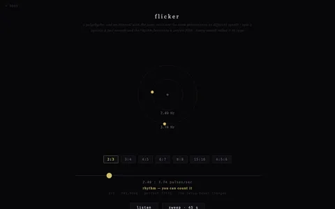
flicker the rhythm→pitch continuum · 3 against 2 at two pulses a second is a polyrhythm, at a hundred it is a fifth · same 702.0¢ at every speed · cowell called it, 1930